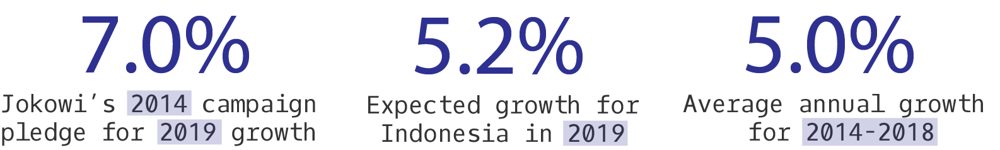

By Timothy Cheston
Visualizations by: Nil Tuzcu
Indonesians head to the polls for presidential and legislative elections on April 17, in what is traditionally billed as a clash of titans in the world’s third largest democracy. This time around, voters will find familiar names on the presidential ballot, as Joko Widodo, or Jokowi, faces Prabowo Subianto in the same billing as the 2014 election, with the one exception of Jokowi now having the incumbency of the presidency behind him. If current polls hold, the election appears less of a rematch than a watered-down sequel.
For his part, Jokowi is leaving nothing to chance, tapping every resource of his office to jolt the economy with a fiscal infusion to secure a second five-year term. After years of cuts under Jokowi, fuel subsidies have recently surged. Social assistance handouts are up by 70 percent year-on-year in the first two months of 2019. Jokowi has poured billions of dollars in new funding for local governments. The fiscal injection is expected to lead to an uptick in growth to reach 5.2 percent for the first quarter.
The short-run economic boost comes on the heel of a campaign in which Jokowi put the economy at the center of his reelection bid. This comes despite the economy being Jokowi’s greatest weakness. Jokowi vowed in his 2014 campaign to accelerate GDP growth to reach 7 percent by the end of his first term. The economy’s performance has fallen far short of his promises, as best evidenced by the massive fiscal outlays to reach 5.2 percent growth this quarter. Jokowi has overseen a period of remarkably stable growth at 5 percent each year in his term, if that growth rate has slowed from the previous administration. Back on the campaign trail, Jokowi now promises a more restrained 5.5 percent growth for 2020, and yet achieving even that rate would eclipse the growth of any year of his term.
In arriving at these diminished ambitions, the question remains: where did Jokowi’s 7 percent pledge go wrong—in overpromising or underperforming?
The last time the economy grew at 7 percent was in 1996, a year before the Asian financial crisis that would bring to end a nearly three-decade span in which growth averaged above 7 percent. If routine at the time, repeating these rates of growth today must confront complex challenges. One is mathematical—few countries at Indonesia’s current income level or above achieve 7 percent growth, having realized most of the scope for rapid catch-up growth from a low-income base. The math would back the case for Jokowi having overpromised, with other groups such as the World Bank forecasting 5.5 percent as Indonesia’s expected growth at the time, if still above the current performance.
Achieving growth rates above potential would require Jokowi’s administration to address the main drag on growth, stagnant manufacturing exports. Jokowi has the dubious honor of presiding over the largest trade deficit in Indonesia’s history. This has occurred despite the enormous potential for Indonesia to diversify into high-value export sectors in electronics and machinery. Researchers at the Growth Lab at Harvard’s Center for International Development (CID) find Indonesia ranks 6th globally in the Complexity Outlook Index (COI), which measures the ease with which Indonesia should be able to use existing capabilities to move into related sectors that offer high-value opportunities to accelerate growth. Indonesia is uniquely positioned globally to enter high-complexity sectors in electronics and machinery. Yet, the same COI measure finds that Indonesia also ranked 6th globally in 2000, when electronics appeared poised to take-off. As Singapore became acutely land-scarce, the country’s investors peered across the Singapore Straight to Indonesia’s Batam Island to absorb the overflows in investments.
Indonesia placed all of its bets on an electronics industry on the islands of Batam. The islands had a lot of advantages: a special economic zone; a free-trade zone since 2007; a long list of financial incentives, subsidies, and tax breaks; but most of all its location less than 20 miles (or 30 km) away from Singapore. That package was sufficient to drum up business to the tune of $20 billion in investment, including over 400 Singaporean firms with operations in Batam and the surrounding islands. Batam soon became the fastest growing city in the world, according to Demographia. Yet even as Singapore’s logistics and land bottlenecks have only worsened, investments in Batam have been stagnant since 2009. Major electronics investors, including Nidec, have moved all of their investments out of Batam for the Saigon High-Tech Park in Vietnam. This relocation of electronics investments to Vietnam comes despite the lack of a proven track record or electronics ecosystem in the country, even by the onset of Jokowi’s presidency in 2014. Today, Vietnam appears to have a thriving electronics cluster across a range of consumer electronics. In short succession, Vietnam’s rapid entry into electronics also now offers greater opportunities for further diversification into industrial electronics than in Indonesia, according to the same COI measure from the Growth Lab at Harvard CID.
While no man, or economy, is an island, the failure of Batam originates in the changes in long-run interaction of the island’s officials with central government. Successive presidents were able to fight off economic nationalists to woo foreign investors with twenty-year tax breaks and exemptions to Indonesia’s onerous import duties. The weakness of this strategy of generous tax breaks was in affording even fewer resources for central government to address its neglected infrastructure. At the same time, decentralization efforts gave local government control over setting the minimum wage, as a potential political tool to gain votes. These local decisions to increase minimum wages have had national effects. Batam experienced minimum wage riots in 2011 that led many investors to abandon the islands. Nationally, the minimum wage in 2018 stood at 90 percent of the average wage, up from 60 percent of the average wage in 2008, according to McLeod and Rosdaniah (2018). Indonesian manufacturing wages now stand 45 percent higher than in Vietnam, according to a survey of the Japan External Trade Organization. Favorable geography and strong financial incentives have not proven sufficient to sustain an electronics industry against deficient infrastructure, rising wages, and policy uncertainty.
The failure of these new economic islands has been unable to take the pressure of Jakarta as the main pole of economic growth. Developing an electronics industry outside the special trade, investment, and infrastructure regime of Batam has also proven near impossible against the barriers in place in Indonesia. The majority of imports, by volume, face duties and restrictions, adding to manufacturing costs. Indonesia had the third-most restrictive foreign direct investment (FDI) regime of 68 countries studied by the OECD, helping to explain why FDI is one of the smallest shares of GDP in the region. Restrictions on foreign workers further diminish the ability to inject the local workforce with new knowhow and skills to diversify production. While international migrants comprise one in every two people in Singapore or one in twelve in Malaysia, the same migrants are one in 2,880 in Indonesia. Within Indonesia, the island divide has only worsened. In a country of more than 18,000 islands, the island of Java alone contributes the majority (60 percent) of Indonesia’s growth. In 2018, Jakarta grew by 6.4 percent, while Papua, already one of the poorest provinces in Indonesia, contracted by nearly 18 percent.
Starting with the establishment of the New Order in 1968, Indonesia has been historically dominated by an active industrial policy. Manufacturing became the main driver of growth, at 12 percent per year. Rapid industrialization came to an abrupt end with the 1997 Asian financial crisis and resignation of Suharto a year later. New processes of decentralization and democratization have placed new constraints on the ability of central government to coordinate all elements of industrial policy. The central target of industrial policy is now to ensure favorable macroeconomic conditions. This presents a marked break from the tradition of “picking winners” through which the government provided heavy-handed support, often via state-owned enterprises, to selective industrial sectors. While the previous industrial policy had its fair share of losers, growth in manufacturing has slowed significantly in the current period, to five percent per year. As a share of the economy, manufacturing peaked around 2000 before entering the current period of gradual decline. Indonesia appears at risk of “premature deindustrialization” as manufacturing and industry jobs represent ever-shrinking shares of the economy, while low-complexity services, with weaker conditions for competition and fewer incentives for productivity gains, are on the rise.
Conscious of the country’s neglected infrastructure, Jokowi began his administration by setting out a plan to spend 32 percent of GDP ($323 billion) to support manufacturing industries by addressing infrastructure needs in the form of new roads, railway, airports, ports, and power stations, financed in part by reducing fuel subsidies. These improvements have not yet translated into manufacturing gains; rather, the economy has become more natural-resource dependent of late, leading to increased volatility that recently has resulted in major losses in export totals and a widening of the current-account deficit. Worsening balance sheets explain why the emerging-market sell-off in 2018 included the rupiah, with the exchange rate returning to a level last seen during the Asian financial crisis. In the 2018 budget, Jokowi also reversed spending patterns to serve vote-getting priorities, increasing energy subsidies by nearly 70 percent, while slowing the growth of infrastructure spending. Jokowi’s campaign further presented a vision for a more locally-determined system of investment and social protection, through greater spending on village fund programs and free food cards.
The potential for a global economic slowdown, particularly in China, Indonesia’s main trading partner, present multiple new risks on the economic front. At the onset of the Asian financial crisis, China had an income per capita that was 40 percent that of Indonesia. Today, China’s income per capita is 140 percent that of Indonesia. This reversal of fortunes also presents new opportunity: where trade wars and rising wages make China a risker and costlier place to do business, Indonesia may be better placed to attract new investors.
Whoever is elected president will face a shrinking fiscal window with which to stimulate growth. This adds yet another constraint to the ability of the president to coordinate the creation of new manufacturing exports. The need for new economic diversification will only become more pressing to hold together a diverging national project. A landslide victory in the upcoming election may present just the mandate necessary for the president to advance such a concerted effort to enter new export sectors. If the president is able to quell populist and nationalist factions to launch new exports, achieving 7 percent growth would have the potential to transform from campaign promise to Indonesian reality.